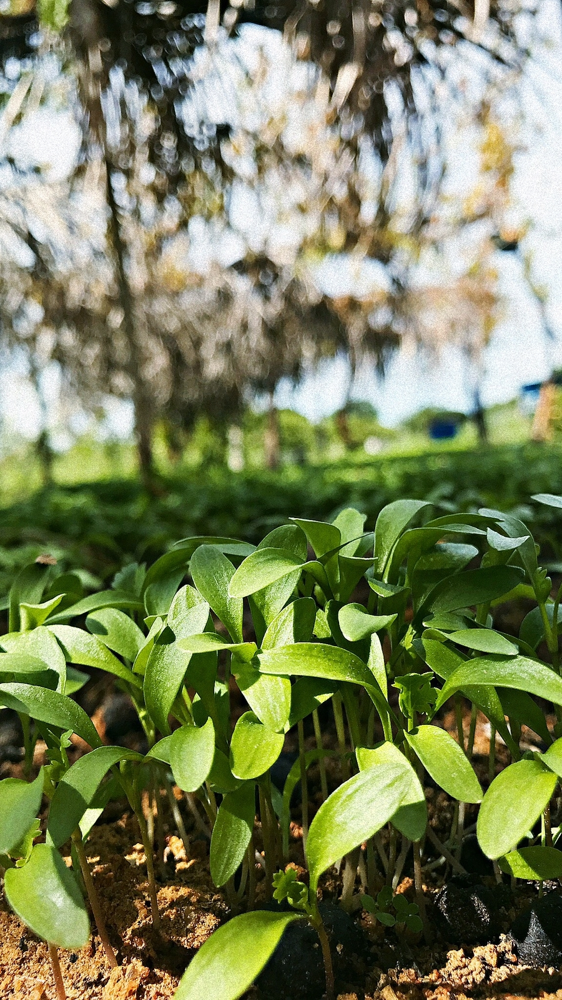

HL CAMERA

Quem Sou Eu???
Deixa eu me apresentar, Meu nome é Hélio Lucas tenho 19 anos moro em petrolina e gosto muito de fotografia e programação.
Como eu tiro essas fotos?
Basicamente eu deixo em um ângulo bom, porque o principal da foto é a edição e depois eu edito pelo Lightroom e Avatan.
Eu faço isso por diversão, não planejo nada antes, eu simplesmente estou passando em algum lugar, adimiro algo e tiro normalmente 3 fotos de angulos diferentes, nada complexo que faça eu demorar.